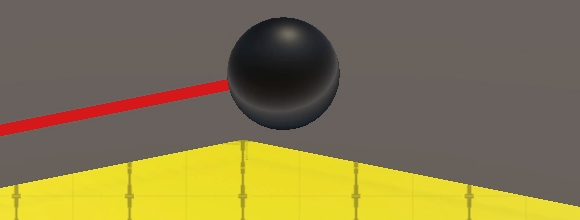

Surface Contact
Staying in Touch
- Stick to the ground instead of launching off a ramp.
- Perform a raycast.
- Configure multiple layers and their interaction.
- Navigate stairs.
- Make use of steep contacts.
This is the third installment of a tutorial series about controlling the movement of a character. It's about refining how a sphere interacts with surfaces.
This tutorial is made with Unity 2019.2.14f1. It also uses the ProBuilder package.
Sticking to the Ground
When our sphere reaches the top of a ramp it goes flying, due to its upward momentum. This is realistic, but might not be desirable.
A similar thing happens when spheres bump into sudden small elevation differences. I made a test scene that demonstrates this for steps up to one unit high, with 0.1 increments.
When approaching with enough velocity a sphere will bounce if the step isn't too high. In the test scene this even happens a little for the flat lane, because I made it by reducing the step height to zero without merging the vertices. That produces what's known as a ghost collision. Scene geometry should be designed to avoid that, but I kept it in to point it out.
In real life there are various techniques to keep something stuck to the ground. For example Formula One race cars are designed to convert airflow to downforce. So there is a realistic basis to do something similar for our spheres.
Collision Timing
Let's consider the moment a sphere would get launched off a ramp. To keep it stuck to the surface we'll have to make adjustments to its velocity, realigning it with the surface. Let's examine exactly when we'll receive the information that we need. I'll make the sphere white when it's not on the ground, by adjusting its color in Update based on OnGround, similar to the coloration demonstrated at the end of the previous tutorial.
void Update () {
…
GetComponent<Renderer>().material.SetColor(
"_Color", OnGround ? Color.black : Color.white
);
}
To observe the exact timing, temporarily reduce the physics timestep and time scale.

The physics step during which the sphere gets launched still has a collision. We act on that data during the next step, so we think that we're still grounded while we no longer are. It's the step after that when we no longer get collision data. So we're always going to be a bit too late, but this isn't a problem as long as we're aware of it.
Steps Since Last Grounded
Let's keep track of how many physics steps there have been since we considered ourselves grounded. Add an integer field for it and increment it at the start of UpdateState. Then if it turns out that we're on the ground set it back to zero. We'll use this to determine when we should snap to the ground. It can also be useful for debugging.
int stepsSinceLastGrounded;
…
void UpdateState () {
stepsSinceLastGrounded += 1;
velocity = body.velocity;
if (OnGround) {
stepsSinceLastGrounded = 0;
jumpPhase = 0;
if (groundContactCount > 1) {
contactNormal.Normalize();
}
}
else {
contactNormal = Vector3.up;
}
}
Snapping
Add a SnapToGround method that keeps us stuck to the ground if needed. If it succeeds then we'll be grounded. Have it indicate whether this happened by returning a boolean, initially just returning false.
bool SnapToGround () {
return false;
}
That way we can conveniently combine it with the OnGround check in UpdateState using a boolean OR. That works because SnapToGround will only get invoked when OnGround is false.
void UpdateState () {
stepsSinceLastGrounded += 1;
velocity = body.velocity;
if (OnGround || SnapToGround()) {
…
}
…
}
SnapToGround only gets invoked when we're not grounded, so the amount of steps since last grounded is greater than zero. But we should only try to snap once directly after we lost contact. Thus when the amount of steps is greater than one we should abort.
bool SnapToGround () {
if (stepsSinceLastGrounded > 1) {
return false;
}
return false;
}
Raycasting
We only want to snap when there's ground below the sphere to stick to. We can check this by casting a ray from the sphere body's position straight down, by invoking Physics.Raycast with body.position and the down vector as arguments. The physics engine will perform this raycast and return whether it hit something. If not then there is no ground and we abort.
if (stepsSinceLastGrounded > 1) {
return false;
}
if (!Physics.Raycast(body.position, Vector3.down)) {
return false;
}
return false;
If the ray did hit something then we must check whether it counts as ground. Information about what was hit can be retrieved via a third RaycastHit struct output parameter.
if (!Physics.Raycast(body.position, Vector3.down, out RaycastHit hit)) {
return false;
}
The hit data includes a normal vector, which we can use to check whether the surface we hit counts as ground. If not, abort. Note that in this case we're dealing with the true surface normal, not a collision normal.
if (!Physics.Raycast(body.position, Vector3.down, out RaycastHit hit)) {
return false;
}
if (hit.normal.y < minGroundDotProduct) {
return false;
}
Realigning with the Ground
If we haven't aborted at this point then we've just lost contact with the ground but are still above ground, so we snap to it. Set the ground contact count to one, use the found normal as the contact normal, and return true.
if (hit.normal.y < minGroundDotProduct) {
return false;
}
groundContactCount = 1;
contactNormal = hit.normal;
return true;
Now we consider ourselves to be grounded, although we're still in the air. The next step is to adjust our velocity to align with the ground. This works just like aligning the desired velocity, except that we have to keep the current speed and we'll calculate it explicitly instead of relying on ProjectOnContactPlane.
groundContactCount = 1; contactNormal = hit.normal; float speed = velocity.magnitude; float dot = Vector3.Dot(velocity, hit.normal); velocity = (velocity - hit.normal * dot).normalized * speed; return true;
At this point we are still floating above the ground, but gravity will take care of pulling us down to the surface. In fact, the velocity might already point somewhat down, in which case realigning it would slow convergence to the ground. So we should only adjust the velocity when the dot product of it and the surface normal is positive.
if (dot > 0f) {
velocity = (velocity - hit.normal * dot).normalized * speed;
}
This is enough to keep our spheres sticking to the ramp when going over the top. They will float for a little bit but this is hardly noticeable in practice. Even though the spheres will turn white for one frame, in FixedUpdate we'll treat the spheres as grounded the whole time. It's just that Update gets invoked while we're in an intermediate state.
It also prevents spheres from getting launched when bouncing off a step.
Note that we're only considering a single point below us to decide whether we're above ground. This works fine as long as the level geometry isn't too noisy nor too detailed. For example a tiny deep crack could cause this to fail if the ray happened to be cast into it.
Max Snap Speed
It makes sense that at high speeds our sphere gets launched anyway, so let's add a configurable max snap speed. Set it to the maximum speed by default so snapping always happens when possible.
[SerializeField, Range(0f, 100f)] float maxSnapSpeed = 100f;
Then also abort SnapToGround when the current speed exceeds the max snap speed. We can do this before the raycast by calculating the speed earlier.
bool SnapToGround () {
if (stepsSinceLastGrounded > 1) {
return false;
}
float speed = velocity.magnitude;
if (speed > maxSnapSpeed) {
return false;
}
if (!Physics.Raycast(body.position, Vector3.down, out RaycastHit hit)) {
return false;
}
if (hit.normal.y < minGroundDotProduct) {
return false;
}
groundContactCount = 1;
contactNormal = hit.normal;
//float speed = velocity.magnitude;
float dot = Vector3.Dot(velocity, hit.normal);
if (dot > 0f) {
velocity = (velocity - hit.normal * dot).normalized * speed;
}
return true;
}
Note that setting both max speeds to the same value can produce inconsistent results due to precision limitations. It's better to make the max snap speed a bit higher or lower than the max speed.
Probe Distance
We're snapping when there's ground below the sphere, no matter how far away it is. It's better to only check for nearby ground. We do this by limiting the range of the probe. There is no best maximum distance, but if too low snapping can fail at steep angles or high velocities, while too high can lead to nonsensical snapping to ground far below. Make it configurable with a minimum of zero and a default of one. As our sphere has a radius of 0.5 that means we check up to half a unit below the sphere's bottom.
[SerializeField, Min(0f)] float probeDistance = 1f;
Add the distance as a fourth parameter to Physics.Raycast.
if (!Physics.Raycast(
body.position, Vector3.down, out RaycastHit hit, probeDistance
)) {
return false;
}
Ignoring Agents
When checking for ground to snap to it makes sense that we only consider geometry that could represent ground. By default the raycast checks anything except for objects put on the Ignore Raycast layer. What shouldn't count can vary, but the spheres that we're moving most likely don't. We won't accidentally hit the sphere we're casting for, because we're casting from its position outward, but we might hit another moving sphere. To avoid that we can set their Layer to Ignore Raycast, but let's create a new layer for everything that's active and should be ignored for this purpose.
Go to the layer settings, either via the Add Layer... option of a game object's Layer dropdown or the Tags and Layers section of the project settings. Then define a new custom user layer. Let's name it Agent, for generic active entities that aren't part of the level geometry.
Move all spheres to that layer. Changing the prefab's layer will do.
Next, add a configurable LayerMask probe mask to MovingSphere, initially set to −1, which matches all layers.
[SerializeField] LayerMask probeMask = -1;
Then we can configure the sphere so it probes all layers except Ignore Raycast and Agent.
To apply the mask add it as a fifth parameter to Physics.Raycast.
if (!Physics.Raycast(
body.position, Vector3.down, out RaycastHit hit,
probeDistance, probeMask
)) {
return false;
}
Jumping and Snapping
Snapping now works and is configurable, but it also activates when we jump, negating upward momentum. To make jumps functional again we have to avoid snapping directly after we jumped. We can track this by counting the physics steps since we last jumped, just like we count the steps since last grounded. Increment it at the beginning of UpdateState and set it back to zero when a jump activates.
int stepsSinceLastGrounded, stepsSinceLastJump;
…
void UpdateState () {
stepsSinceLastGrounded += 1;
stepsSinceLastJump += 1;
…
}
…
void Jump () {
if (OnGround || jumpPhase < maxAirJumps) {
stepsSinceLastJump = 0;
jumpPhase += 1;
…
}
}
Now we can abort SnapToGround also when it's too soon after a jump. Because of the collision data delay we're still considered grounded the step after the jump was initiated. So we must abort if we're two or fewer steps after a jump.
if (stepsSinceLastGrounded > 1 || stepsSinceLastJump <= 2) {
return false;
}
Stairs
Let's next consider a more difficult kind of surface: stairs. Realistically spheres cannot roll up stairs very well if at all, but we might want them to do so anyway, maybe because they represent something that should be able to navigate stairs. I made a test scene containing five 45° stairs, with step sizes 0.1, 0.2, 0.3, 0.4, and 0.5.
With default settings the spheres can't handle the stairs at all. At maximum acceleration most manage to ascend, but the results are unreliable and bouncy, no smooth movement at all. Trying to move at an angle instead of straight up the stairs is almost impossible.
Simplified Collider
Large stair steps make movement impossible. And while it is possible to bounce up stairs with small steps, collisions become arbitrary and motion becomes jittery instead of smooth.
Rather than try to fight agains the physics engine we'll be pragmatic and make its work easier. We want smooth, consistent, controllable motion on stairs. We can get that when we use flat ramps instead. So let's replace the colliders of the stairs with ramps.
A ramp is a poor approximation of stairs. The best compromise is to design the collider ramp so it cuts through the middle of the steps. The collisions will then happen both a bit above and below the visible geometry.
I've created such shapes to match the five stairs, first as regular ProBuilder objects. Then I converted them to colliders via the Set Collider option in the ProBuilder window.
Disable the mesh collider components of the stairs, but don't remove them at this point. Then temporarily increase the max ground angle to 46° so the spheres can move up the 45° stairs.
While it requires some additional level design work, using simplified colliders for stairs is the best way to make them navigable using physics. In general it is a good idea to make collision shapes as simple as possible, avoiding needless details both for performance and movement stability reasons. So we'll stick with this approach. But it is an approximation, so on close inspection you'll see that the spheres both cut through and hover above the stair steps. However this usually isn't that obvious from a distance and while in motion.
Detailed and Stairs Layers
That we use a simplified collider for sphere-stairs interaction doesn't mean we cannot use the original stairs collider for other collisions. For example we might want small debris to land on the individual stair steps correctly, instead of sliding down the ramp. Let's make this possible by adding two more layers: one for detailed and one for stairs objects.
The probe mask should include the Stairs layer but not the Detailed layer.
Next, go to the Physics section of the projects settings and adjust the layer collision matrix. Stairs should only interact with Agent, which should not interact with Detailed.
Now enable the stairs mesh collider components again. Then add a few small rigidbody objects to fall on top of them to see both kind of interactions at the same time. If you give those objects a low enough mass—like 0.05—the spheres will be able to push them aside.
Max Stairs Angle
If we're able to climb stairs, it makes sense that we use a different max angle for stairs than for normal ground. So add a separate max angle for them, set to 50° by default.
[SerializeField, Range(0, 90)]
float maxGroundAngle = 25f, maxStairsAngle = 50f;
…
float minGroundDotProduct, minStairsDotProduct;
…
void OnValidate () {
minGroundDotProduct = Mathf.Cos(maxGroundAngle * Mathf.Deg2Rad);
minStairsDotProduct = Mathf.Cos(maxStairsAngle * Mathf.Deg2Rad);
}
Which min dot product we have to compare with now depends on what kind of surface we're on. We'll add a configurable stairs mask option for that, similar to the probe mask.
[SerializeField] LayerMask probeMask = -1, stairsMask = -1;
Create a new GetMinDot method that returns the appropriate minimum for a given layer, which is an integer. Assuming we can directly compare the stairs mask and layer, then if they're not equal return the min ground dot product, otherwise the min stairs dot product.
float GetMinDot (int layer) {
return stairsMask != layer ?
minGroundDotProduct : minStairsDotProduct;
}
However, the mask is a bit mask, with one bit per layer. Specifically, if the stairs is the eleventh layer then it matches the eleventh bit. We can create a value with that single bit set by using 1 << layer, which applies the left-shift operator to the number 1 an amount of times equal to the layer index, which is ten. The result would be the binary number 10000000000.
return stairsMask != (1 << layer) ?
That would work if the mask has only a single layer selected, but let's support a mask for any combination of layers. We do that by taking the boolean AND of the mask and layer bit. If the result is zero then the layer is not part of the mask.
return (stairsMask & (1 << layer)) == 0 ?
Retrieve the correct min dot value at the start of EvaluateCollision and use it to check whether a contact counts as ground.
void EvaluateCollision (Collision collision) {
float minDot = GetMinDot(collision.gameObject.layer);
for (int i = 0; i < collision.contactCount; i++) {
Vector3 normal = collision.GetContact(i).normal;
if (normal.y >= minDot) {
groundContactCount += 1;
contactNormal += normal;
}
}
}
Also use GetMinDot in SnapToGround when checking whether we're above ground.
if (hit.normal.y < GetMinDot(hit.collider.gameObject.layer)) {
return false;
}
Steep Contacts
Besides ground contacts there are also other contacts. A ground contact is needed for movement, but sometimes we're only in contact with a wall. Or we could be stuck in a crevasse. If we had air acceleration we would still have some control in such cases, but with some extra work we can do a lot more.
Detecting Steep Contacts
A steep contact is one that is too steep to count as ground, but isn't a ceiling or overhang. So everything up to a perfectly vertical wall. Let's keep track of the normal and count of such contacts in fields and with a property, just like we do for the regular ground contacts.
Vector3 contactNormal, steepNormal; int groundContactCount, steepContactCount; bool OnGround => groundContactCount > 0; bool OnSteep => steepContactCount > 0;
Reset the new data in ClearState as well.
void ClearState () {
groundContactCount = steepContactCount = 0;
contactNormal = steepNormal = Vector3.zero;
}
In EvaluateCollision, if we don't have a ground contact check whether it's a steep contact. The dot product of a perfectly vertical wall should be zero, but let's be a bit lenient and accept everything above −0.01.
if (normal.y >= minDot) {
groundContactCount += 1;
contactNormal += normal;
}
else if (normal.y > -0.01f) {
steepContactCount += 1;
steepNormal += normal;
}
Crevasses
A crevasse is problematic, because once stuck in it without air jumps available it's impossible to get out, unless air acceleration is large. I created a test scene with a small crevasse to demonstrate this.
The idea is that if we end up grounded the steep contacts aren't needed. But when even snapping cannot detect the ground our next best bet is to check for a crevasse or similar case. If we find ourselves wedged inside a narrow space, with multiple steep contacts, then we might be able to move by pushing against those contact points.
Create a CheckSteepContacts that returns whether it succeeded in converting the steep contacts into virtual ground. If there are multiple steep contacts then normalize them and check whether the result counts as ground. If so, return success, otherwise failure. In this case we don't have to check for stairs.
bool CheckSteepContacts () {
if (steepContactCount > 1) {
steepNormal.Normalize();
if (steepNormal.y >= minGroundDotProduct) {
groundContactCount = 1;
contactNormal = steepNormal;
return true;
}
}
return false;
}
Add CheckSteepContacts as a third check for the grounded state in UpdateState.
if (OnGround || SnapToGround() || CheckSteepContacts()) {
stepsSinceLastGrounded = 0;
jumpPhase = 0;
if (groundContactCount > 1) {
contactNormal.Normalize();
}
}
Now we're able to move a bit and jump while in the crevasse, and in similar places where we previously got stuck.
Wall Jumping
Let's also revisit wall jumping. We previously restricted jumping to only when on the ground, or air jumps. But we can support jumping off walls as well, if we base the jump direction on the steep normal instead of the contact normal.
Begin by making the jump direction variable and removing the current validity check in Jump.
void Jump () {
Vector3 jumpDirection;
//if (OnGround || jumpPhase < maxAirJumps) {
stepsSinceLastJump = 0;
jumpPhase += 1;
float jumpSpeed = Mathf.Sqrt(-2f * Physics.gravity.y * jumpHeight);
float alignedSpeed = Vector3.Dot(velocity, jumpDirection);
if (alignedSpeed > 0f) {
jumpSpeed = Mathf.Max(jumpSpeed - alignedSpeed, 0f);
}
velocity += jumpDirection * jumpSpeed;
//}
}
Instead, check whether we're on the ground. If so, use the contact normal for the jump direction. If not, the next check is whether we're on something steep. If so, use the steep normal instead. After that comes the check for air jumps, for which we use the contact normal again, which has been set to the up vector. And if none of these apply then a jump is not possible and we abort.
Vector3 jumpDirection;
if (OnGround) {
jumpDirection = contactNormal;
}
else if (OnSteep) {
jumpDirection = steepNormal;
}
else if (jumpPhase < maxAirJumps) {
jumpDirection = contactNormal;
}
else {
return;
}
Air Jumping
At this point we should revisit air jumping. Checking whether the jump phase is less than the max air jumps only works because the phase gets set back to zero directly after the jump, because in the next step we still count as grounded. Thus we should only reset the jump phase in UpdateState when we're more than one step after a jump was initiated, to avoid the false landing.
stepsSinceLastGrounded = 0;
if (stepsSinceLastJump > 1) {
jumpPhase = 0;
}
To keep air jumps working we now have to check whether the jump phase is less than or equal to the max in Jump.
else if (jumpPhase <= maxAirJumps) {
jumpDirection = contactNormal;
}
However, this makes it possible to air jump one extra time after falling off a surface without jumping. To prevent that we skip the first jump phase when air jumping.
else if (jumpPhase <= maxAirJumps) {
if (jumpPhase == 0) {
jumpPhase = 1;
}
jumpDirection = contactNormal;
}
But this is only valid if air jumping is allowed at all, so begin by checking that.
else if (maxAirJumps > 0 && jumpPhase <= maxAirJumps) {
if (jumpPhase == 0) {
jumpPhase = 1;
}
jumpDirection = contactNormal;
}
Finally, let's make wall jumping reset the jump phase so it's possible to wall jump into a new sequence of air jumps.
else if (OnSteep) {
jumpDirection = steepNormal;
jumpPhase = 0;
}
Upward Jump Bias
Jumping off a vertical wall doesn't increase vertical speed. So while it's possible to bounce between nearby opposite walls, gravity will always pull the sphere down. I made a test scene with two blocks to demonstrate this.
However, some games feature wall jumping as a means to reach great height. We can support this by adding an upward bias to the jump direction. The simplest way to do this is by adding the up vector to the jump direction and normalizing the result. The final direction is the average of both, so a jump from flat ground isn't affected while a jump off a perfectly vertical wall is affected the most, becoming into a 45° jump.
jumpDirection = (jumpDirection + Vector3.up).normalized; float alignedSpeed = Vector3.Dot(velocity, jumpDirection);
This affects all jump trajectories that aren't on perfectly flat ground or in the air, which is the most obvious when jumping while moving up a slope.
Let's wrap up by removing the debug sphere coloration from Update.
//GetComponent<Renderer>().material.SetColor(// "_Color", OnGround ? Color.black : Color.white//);
The next tutorial is Orbit Camera.